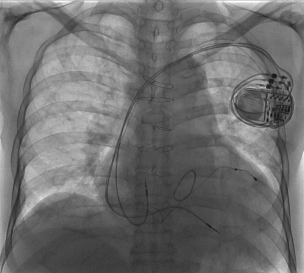

×
HOME
Fundamental EP
ECGs
Clinical Practice
on this page
Indications
Perioperative
Safety
Other cardiac tests
HeartRhythmBox
Our Collection
☰
Clinical Practice
Device-related
GUIDELINES
2012 ACCF/AHA/HRS Focused Update Incorporated Into the ACCF/AHA/HRS 2008 Guidelines for
Device-Based Therapy
of Cardiac Rhythm Abnormalities
2017 AHA/ACC/HRS Guideline for Management of Patients With Ventricular Arrhythmias and the Prevention of
Sudden Cardiac Death
2017 ACC/AHA/HRS Guideline for the Evaluation and Management of Patients With
Syncope
pacemaker
.
indications
Symptomatic
High grade AV block
Low grade AV block w/ pacemaker syndrome-like symptoms
Sinus node dysfunction
Cardioinhibitory reflex syncope
Asymptomatic
High grade AV block
Low grade AV block w/ pacemaker syndrome-like symptoms
HV
Cardioinhibitory reflex syncope
ICD
.
indications
#
Primary Prevention
for those with high risks for SCD.
Secondary Prevention
Post arrest NOT from reversible causes.
High risk for SCD
LVEF less than 35%, NYHA II+
HCM: LV thickness
ARVD: Poor RV and LV function.
Brugada: syncope with spontaneous type I
#
Reversible causes
Acute ischemia
AF with WPW
Idiopathic outflow tract VT
Commotio Cordis
CRT
.
indications

#QRS_duration #typeofBBB #NYHA #rhythm